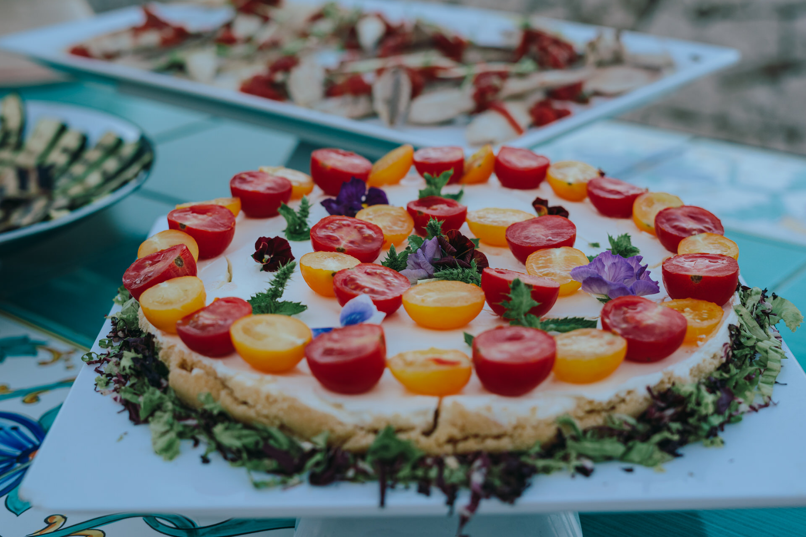
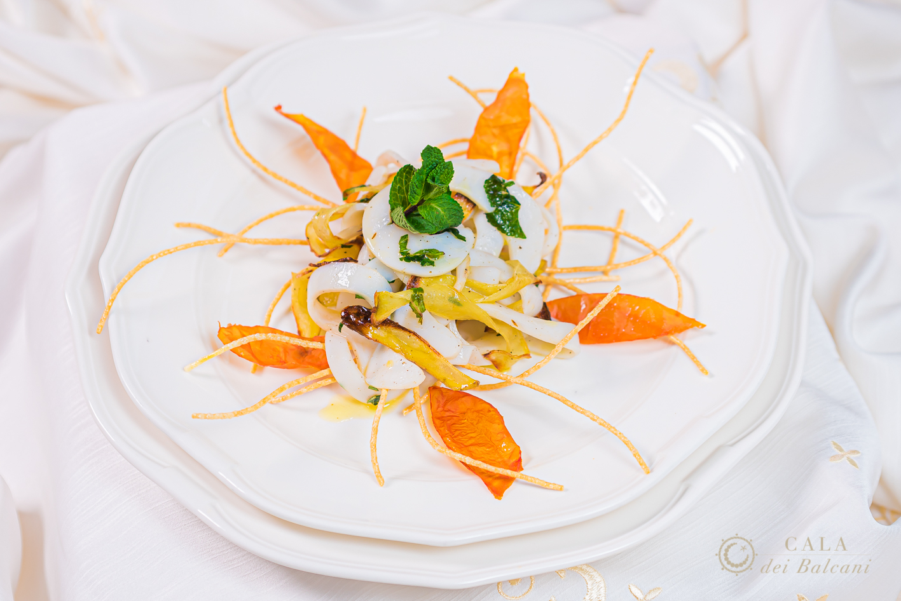
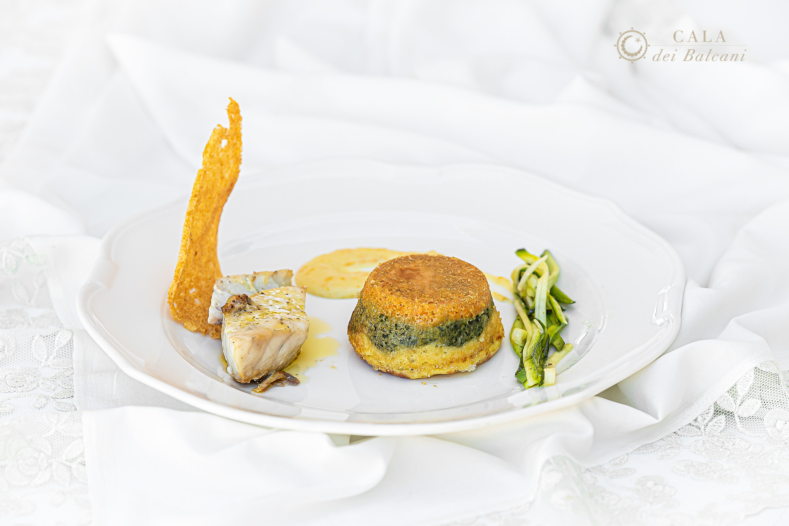
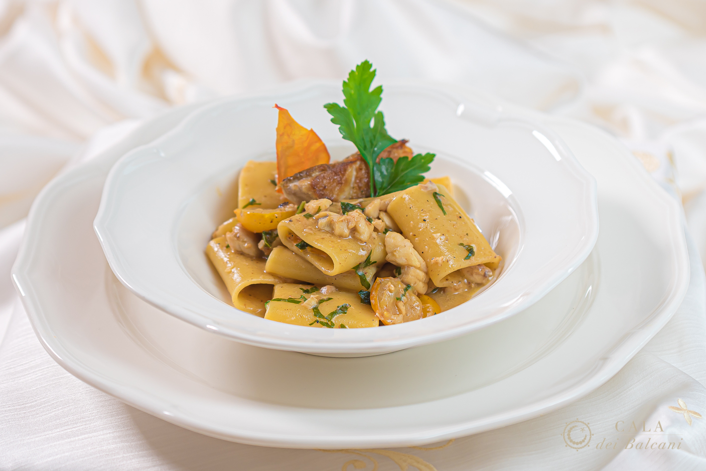
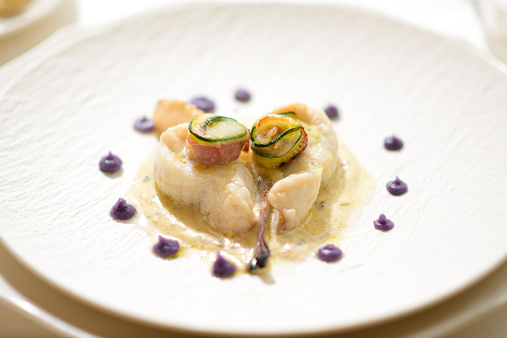

La cucina è uno degli elementi che più contribuisce
a rendere indimenticabile un matrimonio.
Per questo ogni nostro menù nasce dalla valorizzazione delle migliori materie prime del territorio, reinterpretate con eleganza e attenzione ai dettagli.

Un percorso internazionale,
le radici nel Salento.
Il nostro Chef, dopo un importante percorso professionale negli Hilton Hotels di diversi Paesi europei, esperienze in Germania, Polonia, Giappone, America e nel settore delle crociere di lusso, ha scelto di tornare nella sua terra per raccontarla attraverso la cucina.
Il risultato è una proposta gastronomica che unisce tradizione e creatività.
Azienda Agricola Brunitta
Crediamo che la qualità di un piatto nasca prima di tutto dalla qualità degli ingredienti. Per questo valorizziamo i prodotti della nostra azienda agricola Brunitta, che coltiva e trasforma materie prime tipiche del territorio.
L’olio extravergine di oliva utilizzato nei nostri piatti proviene dagli uliveti dell’azienda agricola di famiglia, ottenuto da olive raccolte e lavorate con cura per preservarne profumi e caratteristiche.
Anche la pasta racconta la nostra identità. Tutta la nostra pasta è realizzata con grano duro Senatore Cappelli, una delle varietà più pregiate della tradizione italiana, coltivato e trasformato dall’Azienda Agricola Brunitta. Un prodotto che rappresenta il legame tra agricoltura, territorio e cucina.


Per questo realizziamo menù completamente personalizzati.
Costruiti insieme agli sposi, con particolare attenzione alle esigenze alimentari degli ospiti e alla stagionalità delle materie prime.
La nostra idea di cucina
- ✔ Materie prime locali e di stagione.
- ✔ Olio extravergine di oliva dell’Azienda Agricola Brunitta.
- ✔ Pasta artigianale di grano Senatore Cappelli.
- ✔ Pesce fresco e prodotti selezionati del territorio.
- ✔ Cucina espressa realizzata internamente.
- ✔ Menù personalizzati per ogni matrimonio.
- ✔ Menù ad hoc per tutte le intolleranze ed esigenze alimentari.
Rispetto della Tradizione,
Contaminazione Creativa
Chi in questo luogo sceglie di fare cucina non può ignorare tutto ciò ed è in questa direzione che Cala dei Balcani offre la sua particolare e rispettosa rilettura della tradizione, strizzando l’occhio alla contaminazione, in verità mai eccessiva. Il Salento e la sua cucina tradizionale rappresentano la quintessenza della mediterraneità, caratterizzata dall’uso di prodotti tipici che contribuiscono alla realizzazione di piatti di minimale semplicità e straordinario gusto.
A Cala dei Balcani conta la qualità della materia prima: il pesce sempre fresco di giornata, le verdure dell’orto ed i prodotti caseari provenienti dalle antiche masserie salentine, lavorati con cura e maestria, sono l’anima della loro esperienza culinaria. La loro cucina è una storia d’amore tra il palato e il cuore da cui nasce un menù ricercato, fatto di piatti gustosi ed eccellenti. Un viaggio tra i sapori della Natura in uno spazio che contiene e celebra passione e storia.
Le Fragranze del Territorio
Il menù spazia e le proposte cambiano anche in base alle stagioni e alla creatività dello chef che propone le sue idee con una cura ed uno stile impeccabili. In esso sono presenti l’uso delle più svariate piante spontanee che riassumono le fragranze del territorio, carni scelte e bagnate da pregiati vini anche autoctoni, prodotti da forno tipici come le “friselle” e le “pucce”.
Non da trascurare l’uso che viene fatto del pescato di pregio, dai gamberi rossi del Mediterraneo al polpo, protagonista indiscusso di mille rivisitazioni.
Alchimie dalle Raffinate Sensibilità
“Ricci di polpo su doppia consistenza di caciocavallo podolico e vele di pane croccante” è un piatto ricco di morbide visioni mediterranee.
Nella trasparenza delle ombre un parterre di ingredienti si risolve in alchimie dalle raffinate sensibilità, evocazioni di un tempo fatto di sapori di mare e suggestioni di terra. Ogni singolo particolare approda in questo piatto dove le croccanti rotondità del polpo incontrano la sapidità della fonduta di caciocavallo podolico.
Vele croccanti di pane di grano, il verde dell’erba cipollina e la persistenza del pomodoro rappresentano l’architrave di una visione mediterranea sospesa, il punto prospettico da cui custodire la tradizione.

Un Viaggio tra i Sapori del Salento





Inizia a Pianificare il Tuo Matrimonio
Raccontaci il vostro sogno. Vi risponderemo entro 24 ore con tutte le informazioni di cui avete bisogno.